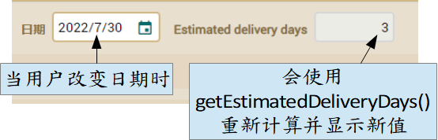

在上一章，我们学到如何使用 JPA 回调在多用户环境的开发中定义默认属性。现在我们将看如何同步计算属性和持久属性。
同步持久属性和计算属性
正如我们所了解的，计算属性不允许筛选或排序列表，因此我们更喜欢使用 @Calculation 的持久属性。但是，@Calculation 属性仅对简单的算术计算有效。当你需要循环、条件、从数据库读取、连接外部服务器或一些复杂的逻辑时，@Calculation 是不够的。对于这些情况，您需要在 getter 中使用 Java 编写逻辑。但是，怎样才能做到这点但同时也保持列表中的排序和筛选呢？很简单，您可以使用两个属性，一个是计算的，一个是持久的，并使用 JPA 回调方法同步两者。您将在本节中学习如何做到这一点。
让我们在 Order 实体中添加一个名为 estimatedDeliveryDays 的新属性：
@Depends("date")
public int getEstimatedDeliveryDays() {
if (getDate().getDayOfYear() < 15) {
return 20 - getDate().getDayOfYear();
}
if (getDate().getDayOfWeek() == DayOfWeek.SUNDAY) return 2;
if (getDate().getDayOfWeek() == DayOfWeek.SATURDAY) return 3;
return 1;
}
这是一个纯计算属性，带有 Java 逻辑的 getter。它使用日期来计算预计交货的天数。这种情况不能只使用支持基本算术 @Calculation 来解决。
我们还必须将 estimatedDeliveryDays 添加到 Order 代码的默认 @View 声明中：
@View(extendsView="super.DEFAULT",
members=
"estimatedDeliveryDays," + // 添加这一行
"invoice { invoice }"
)
...
public class Order extends CommercialDocument {
结果是这样的：

因为 estimateDeliveryDays 中的 @Depends("date")，所以当用户界面中的日期更改时，该值都会重新计算。这样是对的，但是在列表模式时，您无法按预计交货天数排序或筛选。为了解决这个问题，我们添加了第二个属性，这一次是持久的。将下一个代码添加到您的 Order 实体：
@Column(columnDefinition="INTEGER DEFAULT 1")
int deliveryDays;
该注意的是，我们使用了 @Column(columnDefinition="INTEGER DEFAULT 1")，这会让 OpenXava 在创建新列时使用“INTEGER DEFAULT 1”，代表新列的默认值是1而不是null，也避免 int 属性出现错误。是的，在许多情况下，@Column(columnDefinition=) 是对表执行 UPDATE 的替代方法（正如我们在“第十四章：手动更改 schema”中所做的那样），不过它的问题就是依赖数据库。无论如何，这 columnDefinition 与我们的计算/持久属性同步的问题相切，@Column 并不是必需的，它只给 int 属性方便。
这个新 deliveryDays 属性将与 estimatedDeliveryDays 有相同的值，但 deliveryDays 跟它数据库表中的列一样是持久的。这里的棘手问题是让 deliveryDays 属性同步。为此，我们将在 Order 里使用 JPA 回调方法来实现这一点。每次创建新订单 (@PrePersist) 或更新 (@PreUpdate) 时，将estimatedDeliveryDays 的值同步给 deliveryDays 就足够了。
将新的 recalculateDeliveryDays() 方法添加到 Order 实体并使用 @PrePersist 和 @PreUpdate 注解，如下：
@PrePersist @PreUpdate
private void recalculateDeliveryDays() {
setDeliveryDays(getEstimatedDeliveryDays());
}
基本上，每次在数据库中新建 Order 以及更新时都会调用 recalculateDeliveryDays() 方法。
现在您可以试试 Order 模块，您将看到新建或修改订单时，数据库中的 deliveryDays 列会在保存后正确更新，它已准备好用于大量处理，也能筛选或排序列表。
总结
在本章中，您了解到在一个实体生命周期的不同时刻使用 JPA 回调方法来定义逻辑是多么容易，它允许我们在修改现有实体或新建实体时，同步持久和计算属性。